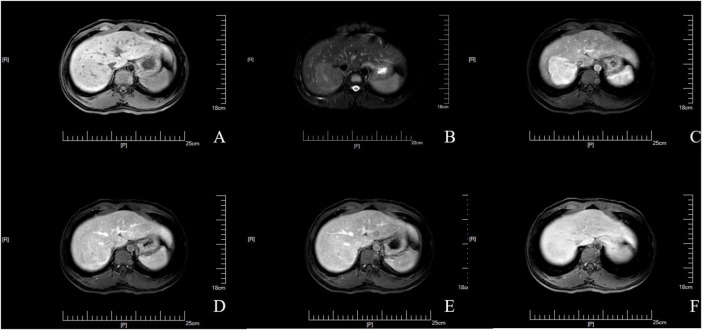

Ficha del catálogo
Hiperplasia nodular focal
- Sistema
- Digestivo
- Modalidad
- RM
- Región
- Hígado
- Dificultad
- Avanzado
Es una lesión hepática benigna formada por hepatocitos hiperplásicos organizados alrededor de una arteria anómala, con conductillos biliares y células de Kupffer en su interior. Predomina en mujeres jóvenes y suele ser un hallazgo incidental. No tiene potencial maligno ni riesgo relevante de sangrado, por lo que su reconocimiento correcto evita biopsias y cirugías innecesarias.
Técnica
La resonancia con contraste es la técnica más útil y su rendimiento aumenta de forma notable cuando se emplea un agente con excreción hepatobiliar, porque la lesión conserva hepatocitos funcionantes y capta el contraste en la fase tardía. También puede caracterizarse con ultrasonido con contraste, que muestra el patrón de llenado desde el centro hacia la periferia.
Qué observar
- Lesión casi isointensa respecto del parénquima en T1 y en T2, con escasa alteración de señal basal
- Realce arterial intenso y homogéneo, salvo la cicatriz central
- Isointensidad respecto del hígado en las fases portal y tardía, sin lavado
- Cicatriz central hiperintensa en T2 que capta contraste de forma tardía
- Ausencia de cápsula verdadera, de hemorragia y de grasa intralesional macroscópica
- Captación igual o mayor que el hígado en la fase hepatobiliar cuando se usa contraste con excreción biliar
Hallazgos
La lesión se identifica sobre todo por su comportamiento dinámico, con un realce arterial vivo y homogéneo que se iguala rápidamente al parénquima en las fases siguientes. La cicatriz central, presente en muchas lesiones aunque no en todas, es hiperintensa en T2 y realza de forma tardía por su componente fibromixoide y por los vasos que contiene. En la fase hepatobiliar la lesión aparece isointensa o hiperintensa respecto del hígado, con acumulación del contraste en su interior, dato de gran valor diagnóstico. En ultrasonido con contraste el llenado arterial se inicia en el centro y se dirige a la periferia, con aspecto de rueda de radios.
Perlas
El elemento que más discrimina frente al adenoma hepatocelular es el comportamiento en la fase hepatobiliar, ya que la hiperplasia nodular focal retiene el contraste y el adenoma suele aparecer hipointenso al no tener una excreción biliar normal. Otra ayuda es que la cicatriz de la hiperplasia realza tarde y es hiperintensa en T2, mientras que la cicatriz del carcinoma fibrolamelar suele ser hipointensa en T2, no realza y con frecuencia se calcifica.
Diagnóstico diferencial
- Adenoma hepatocelular
- Puede contener grasa o hemorragia, es más heterogéneo y en fase hepatobiliar suele verse hipointenso.
- Hepatocarcinoma
- Realce arterial con lavado y cápsula en un hígado con hepatopatía crónica.
- Carcinoma fibrolamelar
- Masa grande y heterogénea en paciente joven, con cicatriz que no realza y que suele calcificar.
- Metástasis hipervascular
- Lesiones múltiples con lavado en fases tardías y antecedente de tumor primario.
- Hemangioma
- Señal muy alta y persistente en T2 con realce globular periférico y relleno centrípeto.
Simuladores
- Área de perfusión anómala del hígado con realce arterial transitorio y sin masa verdadera
- Nódulo regenerativo o hiperplasia nodular regenerativa en hígado con alteración vascular
- Zona de hígado respetado dentro de una esteatosis difusa
Por modalidad
- RM
- Método de elección por su caracterización tisular y por la información única de la fase hepatobiliar
- US
- El ultrasonido con contraste muestra el llenado centrífugo en radios y evita radiación y nefrotoxicidad
- TC
- Detecta el realce arterial homogéneo y la cicatriz central pero es menos específica que la resonancia
Protocolo
Resonancia con T1 en fase y fuera de fase, T2 con y sin supresión grasa, difusión y estudio dinámico tras contraste con fases arterial, portal y de equilibrio. Cuando se emplea un agente con excreción hepatobiliar se añade la fase tardía, que se adquiere alrededor de 20 minutos después de la inyección. Conviene comparar siempre con el parénquima adyacente en cada secuencia.
Clasificación
Errores frecuentes
- Diagnosticar la lesión solo por el realce arterial, sin comprobar la ausencia de lavado
- Interpretar toda cicatriz central como benigna sin valorar su señal en T2 ni su patrón de realce
- Prescindir de la fase hepatobiliar en el paciente joven, donde precisamente aporta la mayor información

hiperplasia nodular focal higado cicatriz central fase hepatobiliar adenoma hepatocelular resonancia lesion benigna